Passo a passo
para as
captações.
O que é
Captação
de imóveis?
- 1Encontrar imóveis em que os proprietários desejam vender ou alugar.
- 2Trazer esses imóveis para a nossa plataforma interna.
- 3Disponibilizar para as imobiliárias e corretores parceiros. Exemplo: QuintoAndar.
Quais portais imobiliários
trabalhamos?
ZAP Imóveis
Imóvel Web
Chaves na Mão
OLX
Quais imóveis
nós captamos?
- 🏘️Casas e Apartamentos residenciais.
- 📍Localizados nas cidades que definimos.
Quais imóveis não captamos?
- 🏢Loja, galpão, sítio, chácara, sala comercial, imóvel comercial, terreno, fazenda, hotel, pousada, depósito, armazém.
- 🏠Ou imóveis residenciais, mas que no anúncio remeta ser anunciado por um corretor/imobiliário e não por um proprietário.
-
🔑Palavras chaves que ao ver em algum anúncio, nós não o abordarmos:CRECI. Ex: 123443F, 3458JImóvel abaixo de R$ 188.000,00 (venda) ou R$ 800,00 (locação).Nome de Imobiliária. Ex: Santos Imóveis, João Imobiliária.Conservação precária, muito abandonada, necessita de reforma.Consultor de NegóciosVárias casas no mesmo endereço. Ex: terreno com 2 casas ou +.Imóveis na planta ou chaves não entregues. Ex: Entrega Nov/2026 | Reparar foto 3D.Imóvel sem documentação.CDHU | COHABAnalisar: Quando o imóvel diz que não aceita financiamento."DISPENSO CORRETORES, NÃO INSISTIR"Analisar: Utilize seu FGTS.Analisar: Entrada facilitada.
Cidades de Locação
Cidades de Venda
ZAP Imóveis.
- 1Abrir a pasta ZAP IMÓVEIS no Drive.
- 2Abrir a planilha base de Venda ou Locação. Ex: Planilha Base | VENDA | ZAP Imóveis
- 3Rolar a planilha até o final.
- 4Identificar os novos leads.
ZAP Imóveis.
- 1Clicar no link a partir do último lead.
- 2Analisar TODOS os pontos dos leads, para descartar Corretores e Imobiliárias.
ZAP Imóveis.
- ✓Identificar que é um Imóvel Residencial.
- ✓Logotipo do QuintoAndar apenas nas Áreas Comuns.
- ✕Analisar se não é Imóvel destruído (mofado, infiltrado, conservação precária, casa abandonada que precisa de reforma).
- !Logotipos de Imobiliárias e Corretores.
- !Fotos 3D.
- !Logotipo do QuintoAndar nas Áreas Comuns e no AP.
Fotos de referência.
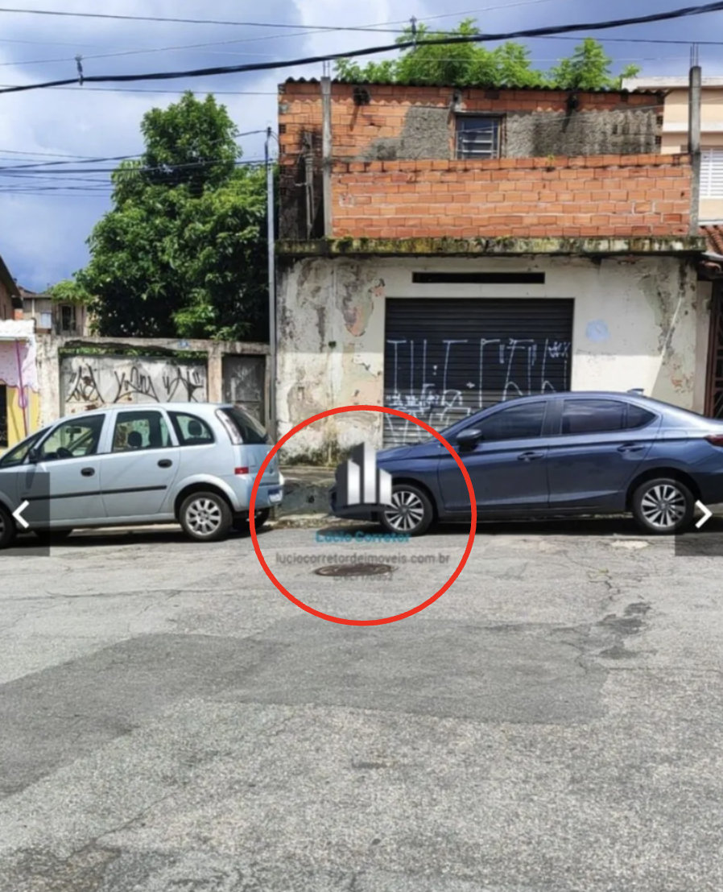
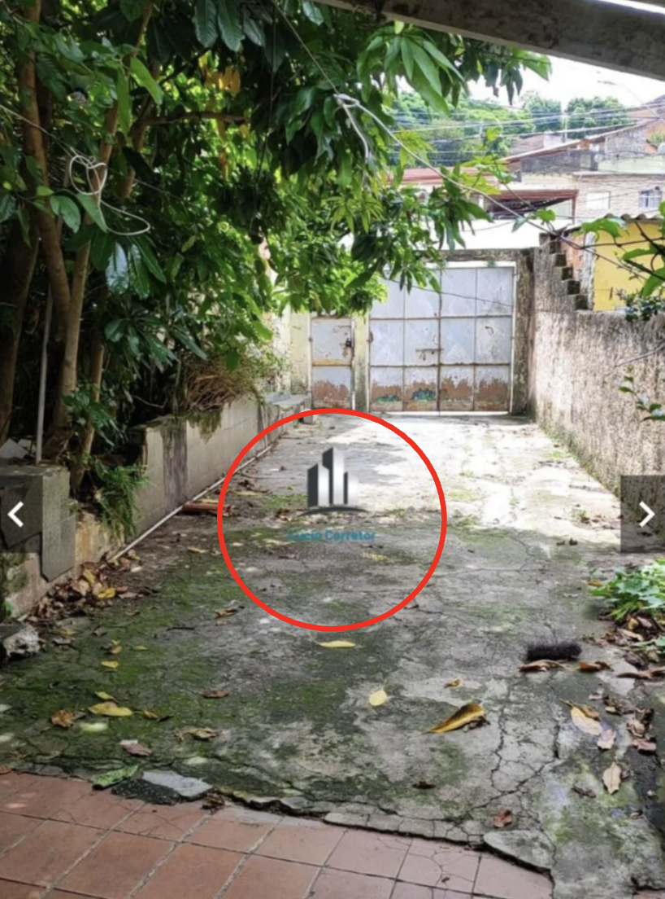
Fotos de referência.
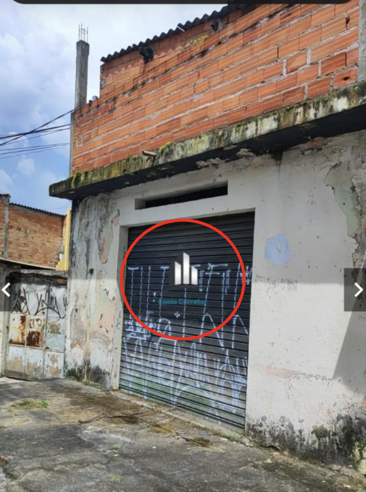
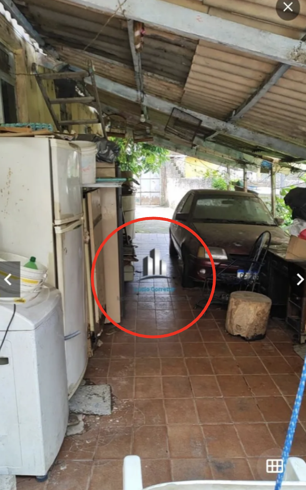
ZAP Imóveis.
- ✓Nome do proprietário (pessoa física).
- ✕Foto de usuário.
- ✕Nome de Imobiliária.
- !Quantidade de Anúncios. (a partir de 3 anúncios, analisar).
Foto de referência.
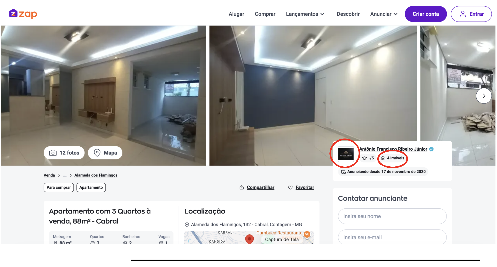
ZAP Imóveis.
- 1Copiar o Endereço.
- 2Colar no nosso perfil de Carteira de Imóveis do QuintoAndar (CIQ) — Cadastrar Imóvel.
- 3Conferir se é Região de Atuação.
Foto de referência.
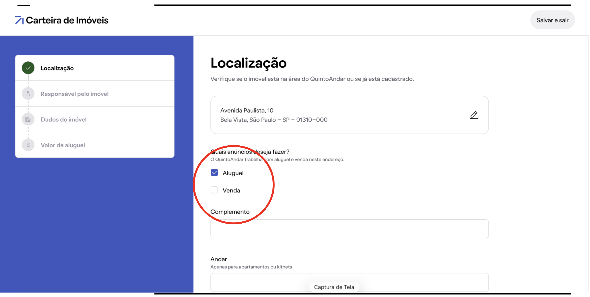
Foto de referência.
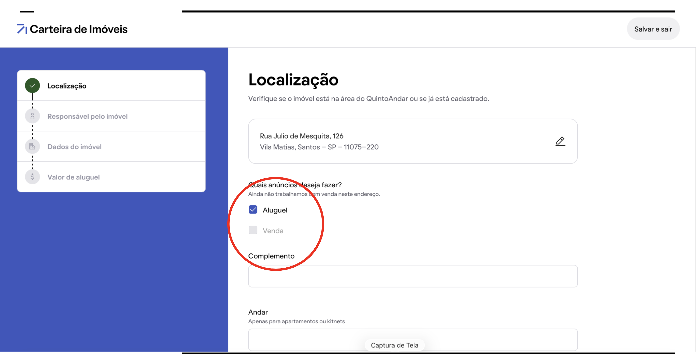
ZAP Imóveis.
Captamos imóveis para venda a partir de R$ 188.000,00.
ZAP Imóveis.
- Analisamos se no anúncio consta alguma das palavras chaves, citadas no slide .
Foto de referência.
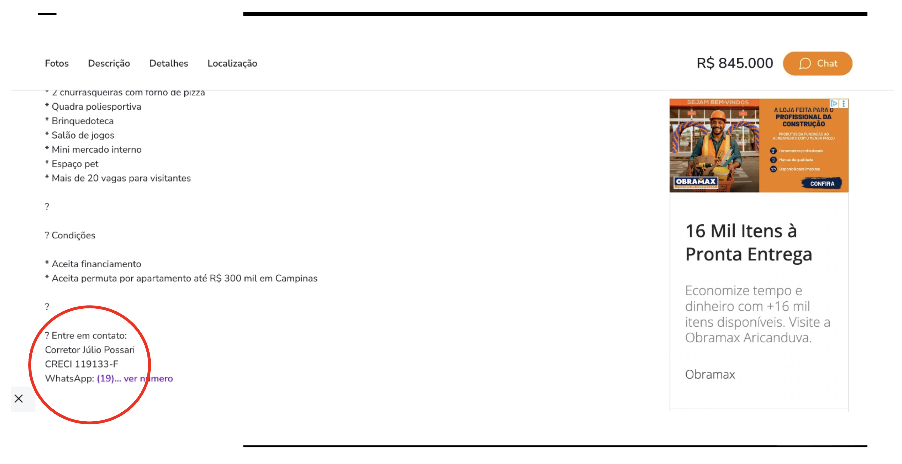
Foto de referência.
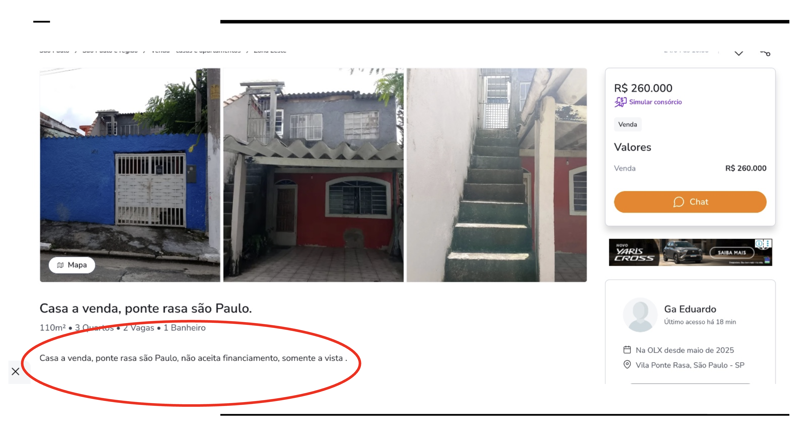
Foto de referência.
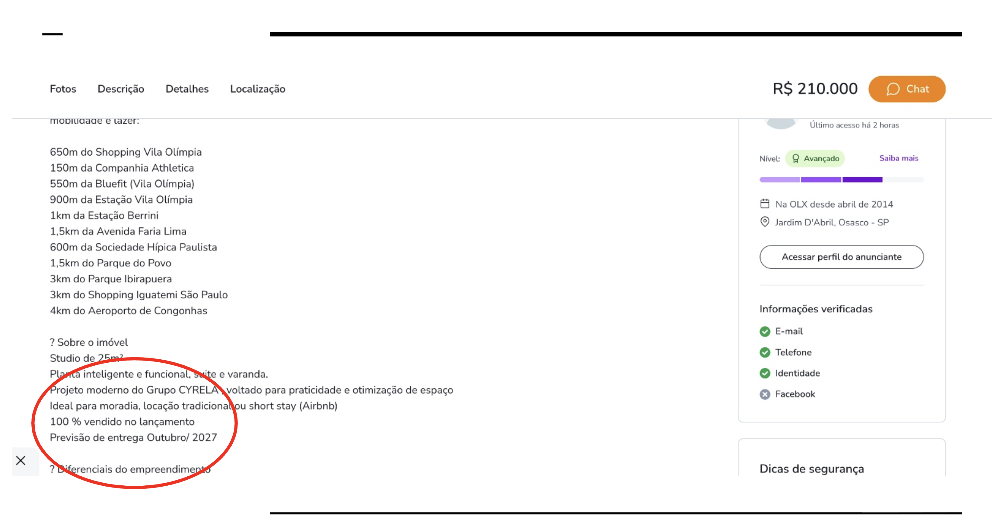
Foto de referência.
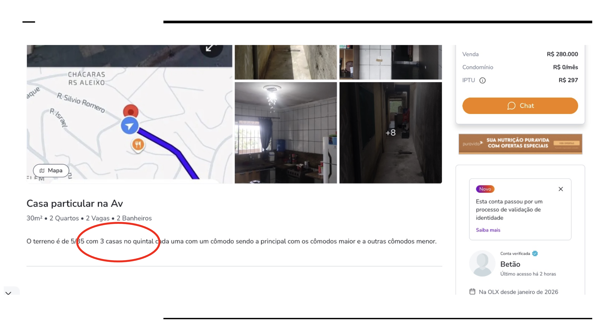
Voltar à
planilha de leads.
- 1Após passar por toda análise e estiver ok, seguir com a captação.
- 2Copiar o(s) número(s) de telefone(s) fornecido(s) na Planilha.
- 3Copiar a quantidade de números existente.
- 4Colar os números na sua própria conversa do WhatsApp.
Analisar perfil
do WhatsApp.
- 1Abrir nova conversa com o número copiado.
- 2Conta Comercial (tipo de empresa). Ex.: Corretor João, Imobiliária X.
- 3Foto de Perfil (crachá, plano de fundo).
- 4Imóvel de padrão alto e pessoa da foto não aparenta ser o dono = pode ser corretor.
- 5Nome do WhatsApp. Ex.: Corretor João, Consultor João.
- 6Mensagens Temporárias: SEMPRE "Desativadas" antes de enviar.
- 7Etiquetar Conversa: colocar etiqueta com Seu Nome.
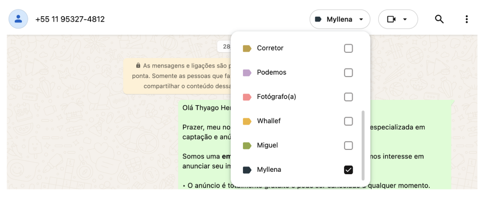
Mandar a
mensagem.
/venda
Quando for venda.
/locação
Quando for locação.
- 1Editar mensagens pré-prontas: Nome do pp + quem chama.
- 2Mandar a mensagem.
- 3Copiar o link do anúncio.
- 4Colar o link na conversa após mandar.
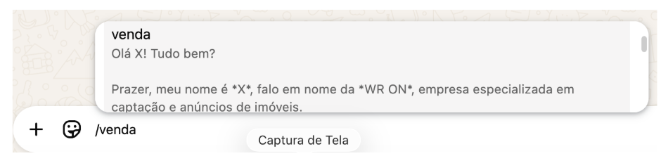
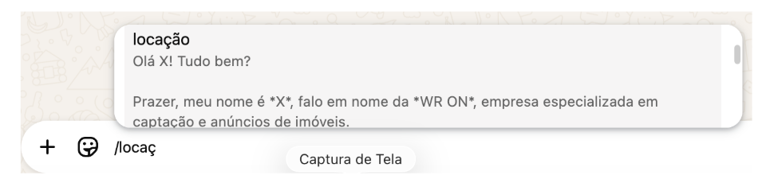
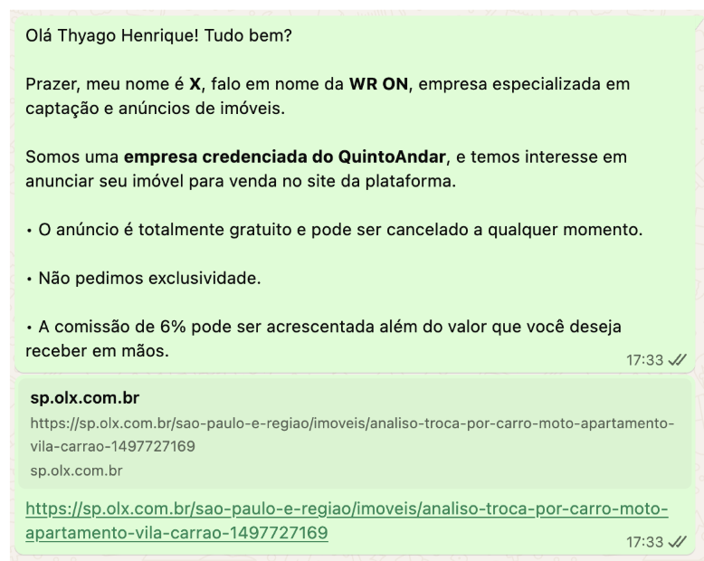
Voltar à planilha
de leads.
Após chamar o primeiro Lead, voltar na planilha e preencher as 2 colunas: "Realizar a Ação" e "Usuário". Isso informa a ação tomada referente a cada lead, e quem foi o usuário.
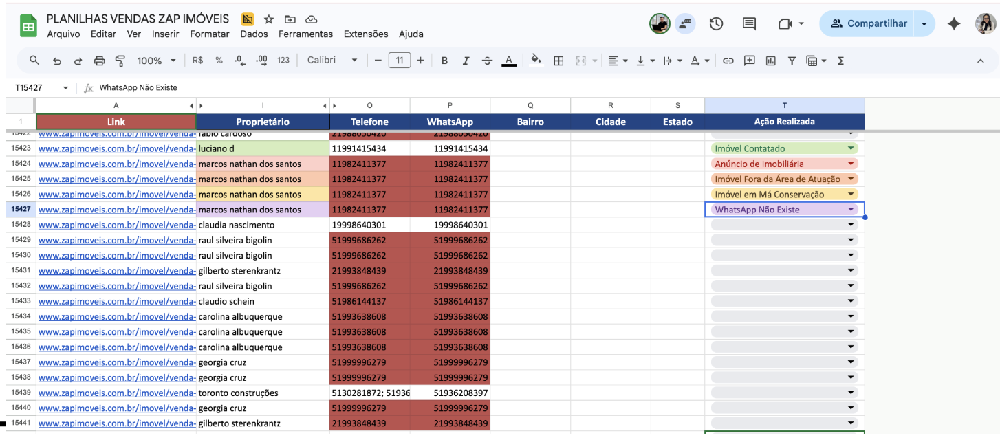
Os proprietários
irão...
Informar que é corretor
Ou imobiliária.
Recusar / reclamar
Não quer anunciar.
Ignorar
Sem resposta.
Solicitar mais informações
Pedir detalhes do processo.
Aceitar anunciar
Seguir para cadastro.
É corretor.
Se ele informar que é corretor, digite /corretor, exclua as mensagens enviadas anteriormente e pode arquivar a conversa.
Mandar /podemos
no dia seguinte.
Se ele ignorar — mandar nossa mensagem padrão /podemos no dia seguinte, de forma gradual, intercalando sempre de 1 a 5.
Fluxo de etiquetas no WhatsApp.
- 1No WhatsApp, clicar nos "3 pontinhos".
- 2Clicar em "Etiquetas".
- 3Selecionar a Etiqueta com Seu Nome.
- 4Identificar a leva de leads do dia anterior pela data.
- 5Selecionar leads sem interação (link sendo a última mensagem).
- 6Adicionar etiqueta de "podemos".
- 7Filtrar apenas "podemos" + etiqueta do seu nome.
- 8Disparar as mensagens por blocos.
- 9Para mensagens já disparadas, retirar a etiqueta de "podemos".
Aceitou
anunciar.
Digite /cadastro — removendo apenas as informações que já possuir no anúncio.
Criar cadastro do pp.
Clicar em "Criar novo card". Preencher APENAS:
- 1Telefone de WhatsApp.
- 2Canal de Captação.
- 3Auxiliar de Captação (Seu Nome).
- 4Data do 1° contato.
- 5Tipo de Imóvel.
- 6Data de Vencimento — mesmo dia, 3 minutos para frente.
- 7Colar o telefone do lead no grupo de LEADS.
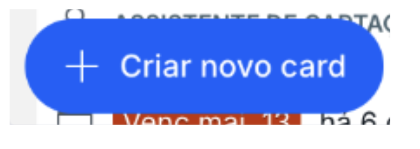
Foto de referência.
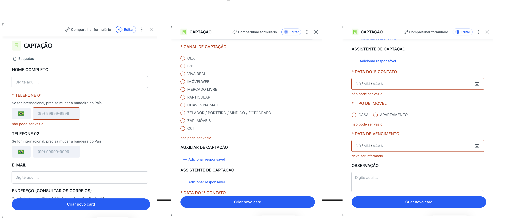
Processo de
captações
finalizado.
WR ON · Captação imobiliária de elite.